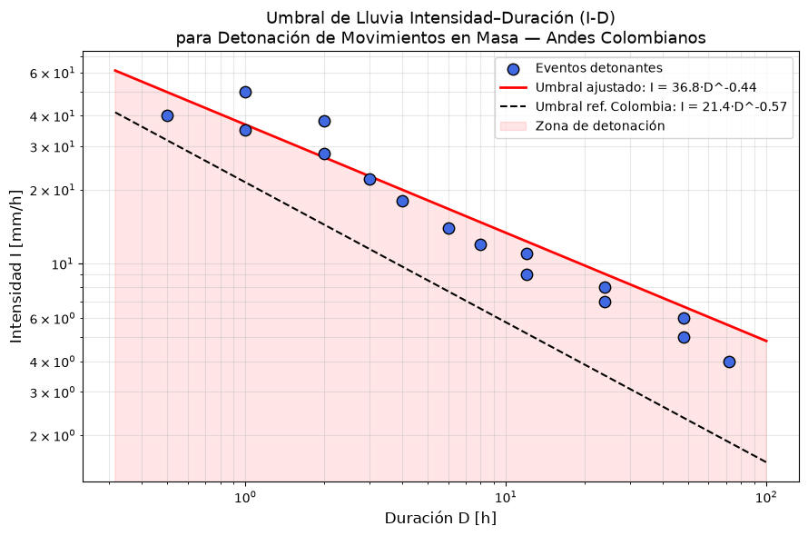

Análisis del factor detonante#
Varnes et al. [1984] define la amenaza como la probabilidad de ocurrencia de un fenómeno potencialmente destructivo en un periodo de tiempo específico y sobre una determinada área. Reichenbach [1999] incluye además, como parte de la amenaza, la magnitud o intensidad de los movimientos en masa como un componente fundamental dentro de la amenaza. De igual forma se debe considerar la propagación, especialmente para movimientos en masa tipo flujos, que se caracterizan por recorridos extensos donde generalmente se presentan los daños o afectaciones.
En este sentido, la zonificación de la amenaza corresponde a la subdivisión del terreno en zonas que son caracterizadas por la probabilidad temporal de la ocurrencia de movimientos en masa de un volumen particular, en un periodo de tiempo dado. Por lo que los mapas de amenaza por movimientos en masa deben indicar tanto el área donde el movimiento puede ocurrir, como la zona de propagación. Una completa evaluación de la amenaza por movimientos en masa cuantitativa incluye:
Probabilidad espacial (\(P_s\)):. La probabilidad que un área dada sea golpeada por un deslizamiento
Probabilidad temporal (\(P_t\)):. La probabilidad que un evento detonante dado causará un deslizamiento
Probabilidad tamaño/volumen (\(P_m\)):. La probabilidad que un deslizamiento tenga un determinado tamaño y volumen
Probabilidad propagación (\(P_p\)):. La probabilidad que un deslizamiento alcanzará una cierta distancia ladera abajo
Para calcular la amenaza, muchos autores proponen considerar las diferentes probabilidades como independientes, de tal forma que la amenaza puede ser calculada como el producto de todas las probabilidades.
Objetivos de aprendizaje#
Al finalizar este capítulo, el estudiante será capaz de:
Distinguir entre susceptibilidad, amenaza y riesgo en el contexto de movimientos en masa.
Comprender las tres componentes de la amenaza: probabilidad espacial, temporal y de magnitud.
Calcular umbrales de lluvia intensidad-duración (I-D) mediante ajuste de curvas potenciales con datos históricos.
Evaluar si un evento de lluvia específico supera el umbral de detonación.
Duración estimada: 2–3 horas
Requisitos previos#
Python:
numpy,matplotlib,scipy.optimize(ajuste de curvas).Hidrología: intensidad de lluvia, duración de eventos, pluviógrafos.
Estadística: regresión potencial, análisis de frecuencia, intervalos de confianza.
Capítulos anteriores:
07_detonante(factores detonantes),09_estadistico(susceptibilidad como probabilidad espacial).
Probabilidad espacial#
La probabilidad espacial corresponde a la susceptibilidad del terreno a ocurrir un movimiento en masa, por lo tanto responde a la pregunta del ¿dónde?. Se obtiene esencialmente a partir de métodos que incorporan las variables condicionantes, tales como metodologías basadas en el conocimiento (heurísticas) o basadas en datos (estadísticas). Los métodos con base física generalmente incorporan dentro del análisis el factor detonante, por lo cual pueden ser consideradas para evaluar la amenaza directamente.
Existen diferentes formas de expresar la probabilidad espacial de los movimientos en masa:
Cualitativo. Implementa términos como alto, medio y bajo, y se utiliza generalmente en métodos heurísticos directos, como mapeo geomorfologico, y métodos de algebra de mapas basado en índices, en los cuales a partir de una escala numérica seleccionada se otorgan valoraciones a cada variable que posteriormente se combinan para obtener una sumatoria o un valor medio ponderado.
Densidad de movimientos en masa. En este caso la probabilidad corresponde a una densidad (MenM/\(km^2\)) o un porcentaje. Este porcentaje generalmente se obtiene del número de movimientos en masa del total de eventos del inventario o el número de celdas inestables del total de celdas del área de estudio. Es también utilizado estimar la probabilidad espacial para cada categoría (alta, media y baja) a partir de la razón entre el área de movimientos en masa o celdas de la categoría y el área total o el número de celdas de la categoría. En este caso toda las celdas de la misma categoría tienen la misma probabilidad espacial.
Probabilidad. Algunos métodos estadísticos, como regresión logística, arrojan resultados que generalmente son interpretados como probabilidad. En este caso cada celda presenta una valor entre 0 y 1. Donde 0 es que la probabilidad de ocurrencia de movimiento en masa en dicha celda es muy baja, tendiendo a 0, y 1 que la probabilidad es muy alta. Como cada celda presenta un valor entre 0 y 1 es necesario definir rangos de probabilidad que representa la categoría, bajo, al igual que medio y alto.
Probabilidad temporal#
Mientras la probabilidad espacial está en función de las variables condicionantes, la probabilidad temporal está en función del factor detonante. Por lo tanto responde a la pregunta del ¿cuándo?. Existen diferentes formas de expresar la probabilidad temporal de los movimientos en masa:
Cualitativo#
El cual se utiliza para escalas regionales y métodos heurísticos, donde no existe información disponible con respecto a la ocurrencia de los movimientos en masa. En este caso se utilizan términos como: (i) casi seguro (el evento es esperado que ocurra), (ii) probable (el evento probablemente ocurrirá bajo condiciones adversas), (iii) posible (el evento podría ocurrir bajo condiciones adversas), (iv) improbable (el evento podría ocurrir bajo circunstancias muy adversas), (v) raro (el evento es concebible pero solamente bajo circunstancias excepcionales), (vi) no creíble (el evento es inconcebible o imaginable).
Análisis de frecuencia de movimientos en masa pasados#
Se utiliza cuando se cuenta con inventarios de eventos en un periodo específico y sin necesidad de discriminar el factor detonante. Los mas utilizados son el modelo de probabilidad de Poisson y el modelo Binomial a partir del intervalo de recurrencia de movimientos en masa registrados.
Probabilidad de Poisson#
La probabilidad de Poisson de experimentar un número n de movimientos en masa durante un tiempo t está dada por:
\(P[N(t)=n]=e^{-\lambda t} \frac{(\lambda t)^n}{n!}\)
Donde \(\lambda\) es la probabilidad de ocurrencia media de un movimiento en masa. Sin embargo es más útil para análisis de amenaza conocer la probabilidad que ocurra uno o mas movimientos en masa en un tiempo t:
\(P[N(t)] \geq 1= 1-P[N(t)=0]=1-e^{-\lambda t}= 1-e^{-t/u}\)
Donde \(u\) es el intervalo de recurrencia media entre movimientos en masa en años, \(u=1/\lambda\)
Ejemplo#
Suponga un registro de movimientos en masa de los pasados 100 años que señala la ocurrencia de 5 movimientos en masa.
\(\lambda=5/100=0.05\)
Se esperaría una tasa de recurrencia de 0.05 por año.
\(u=1/\lambda=t/n=100/5=20\)
Se esperaría un intervalo de recurrencia media de 20 años.
Por lo que se podría estimar la probabilidad de 1 o mas movimientos en masa ocurran durante un tiempo futuro t. Para un periodo de 50 años la probabilidad sería:
\(P[N(50)\geq 1]= 1-e^{-50/20}= 0.918\)
Probabilidad binomial#
La probabilidad Binomial es muy similar, donde la probabilidad de tener 1 o mas movimientos en masa en un periodo t es:
\(P[N(t)\geq 1]=1-(1-1/u)^t\)
Ejemplo#
Para el caso anterior se obtendría:
\(P[N(50)\geq 1]=1-(1-1/20)^{50}=0.923\)
Análisis del factor detonante#
La probabilidad temporal a partir del factor detonante se puede establecer utilizando métodos con base física o métodos empíricos con umbrales, este último especialmente para el caso de la lluvia como factor detonante.
En el caso del uso de modelos con base física la probabilidad temporal se estima generalmente en términos del período de retorno del evento detonante con una determinada magnitud. Estos métodos incorporan dentro del análisis la intensidad o magnitud del factor detonante. En modelos como SHALSTAB o TRIGRS que incorporan la lluvia como factor detonante, la probabilidad temporal corresponde al evento de lluvia utilizado ya que debe ser obtenida a partir de análisis de las series de lluvia como parte del análisis hidrológico. En estos casos es muy común utilizar curvas Intensidad - Duración - Frecuencia (IDF), en las cuales, además de obtener la duración e intensidad de un evento especifico de lluvia se tiene además el periodo de retorno de dicho evento.
Para los métodos empíricos basados en umbrales se utiliza generalmente la probabilidad de ocurrencia de un movimiento en masa dado que se exceda un umbral, o la probabilidad condicionada que un movimiento en masa ocurra dado un evento de magnitud dada.
Lluvia#
Caso de umbrales de una variable#
Para movimientos en masa detonados por lluvia, Berti et al. [2012] proponen utilizar la probabilidad condicionada, definida como la probabilidad de la ocurrencia de algún evento L (en nuestro caso un movimiento en masa) dado la ocurrencia de algún otro evento R (un evento de lluvia con una magnitud específica, expresado en términos de lluvia total, intensidad o cualquier otra variable). La probabilidad condicionada se escribe \(P(L/R)\) y se lee la probabilidad que un movimiento en masa (L) ocurra dado un evento de lluvia (R). Esta probabilidad está determinada por el teorema de Bayes:
\(P(A/B)=\frac{P(B/A)P(A)}{P(B)}\)
Donde:
\(P(B/A)\)= probabilidad condicionada de R dado L (también llamado probabilidad (likelihood)), que es la probabilidad de observar un evento de lluvia de magnitud R cuando ocurre un movimiento en masa.
\(P(A)\)= probabilidad apriori de A, que es la probabilidad de ocurrencia de un movimiento en masa sin importar si un evento de lluvia de magnitud B ocurre o no.
\(P(B)\)= probabilidad marginal de B, que es la probabilidad de observar un evento de lluvia de magnitud R sin importar si un movimiento en masa ocurre o no.
\(P(A/B)\)= probabilidad condicionada de A dado B (también llamada probabilidad posterior), que es la probabilidad de ocurrencia un movimiento en masa cuando un evento de lluvia de magnitud B ocurra.
La probabilidad Bayesiana se obtiene usualmente en términos de frecuencias relativas. Por lo que \(N_R\) es el número total de eventos de lluvia registrados durante un tiempo de referencia dado; \(N_A\) es el número total de movimientos en masa ocurridos durante el mismo periodo de tiempo; \(N_B\) es el número de eventos de lluvia de magnitud B; y \(N_{B/A}\) es el número de eventos de lluvia de magnitud B que generaron movimientos en masa. En este caso los términos de probabilidades se pueden aproximar a:
\(P(A)\approx N_A/N_R\)
\(P(B)\approx N_B/N_R\)
\(P(B/A)\approx N_{B/A}/N_A\)
Por lo que el teorema de Bayes se reduce a:
\(P(A/B)\approx N_{B/A}/N_B\)
Ejemplo#
Si asumimos que 10 movimientos en masa ocurren en una cierta área durante un tiempo dado de referencia, y que 8 de estos movimientos en masa fueron detonados por eventos de lluvia B con una intensidad I>50mm/dia.
Se podría pensar erróneamente que un evento de lluvia de magnitud B (I>50mm/dia) tiene una probabilidad \(8/10=0.8\) de detonar un movimiento en masa. Esto es equivocado porque \(8/10\) indica la probabilidad de \(P(B/A)\) de observar un evento de lluvia de magnitud B cuando ocurre un movimiento en masa, no la probabilidad \(P(A/B)\) de observar un movimiento en masa cuando ocurre un evento de lluvia B. Es por esta razón que umbrales de lluvia solamente basados en los eventos de lluvia que detonaron movimientos en masa (likelihood) no tiene mucho sentido, ya que las probabilidades apriori y marginales no son consideradas. De acuerdo con el teorema de Bayes el valor de \(P(A/B)\) depende de \(P(B/A)\) y también de las probabilidades apriori y marginales.
Por lo tanto, si 1000 eventos de lluvia ocurren en el área considerada y 200 de ellos tienen una intensidad mayor a 50mm/dia, se tiene:
\(P(A)=10/1000=0.01\)
\(P(B)=P(I>50)=200/1000=0.2\)
Entonces:
\(P(A/B)=P(A/I>50)=\frac{0.8*0.01}{0.2}=0.04\)
Caso de umbrales de dos variables#
De acuerdo con Jaiswal and van Westen [2009] la probabilidad temporal de movimientos en masa detonados por lluvias puede ser obtenida evaluando la probabilidad temporal de los eventos de lluvia, combinado con un análisis de umbrales de lluvia basados en dos variables. Para que un movimiento en masa \(L\) ocurra, la lluvia acumulada diaria debe exceder un umbral, el cual es una función \(R(t)\) de la lluvia total en un periodo \(R_d(t)\), y de la cantidad de lluvia antecedente \(R_{ad(t)}\). Estos autores proponen utilizar la probabilidad de excedencia del un umbral de lluvia y la probabilidad de ocurrencia de un movimiento en masa dado que el umbral de lluvia se supere.
Si \(R_T\) es el valor del umbral de \(R\) entonces la probabilidad de ocurrencia de un movimiento en masa \(P(L)\) depende de la probabilidad de excedencia de \(P[R>R_T]\). Por lo tanto, la probabilidad de ocurrencia de movimientos en masa puede ser dada por la intersección de estas dos probabilidades:
\(P[(R>R_T)L]=P[R>R_T]P[L/R>R_T]\)
Esto significa que la probabilidad de ocurrencia de [\(R>R_T\)] y [\(L\)] es igual a la probabilidad de [\(R>R_T\)] multiplicada por la probabilidad de ocurrencia de [L], asumiendo que [\(R>R_T\)] ha ocurrido. La probabilidad de [\(R>R_T\)] puede ser obtenida determinando la probabilidad de excedencia del umbral de lluvia y la probabilidad de [\(L R>R_T\)] se obtiene de la frecuencia de ocurrencia de movimientos en masa luego que el umbral ha sido excedido. En este análisis se está asumiendo que siempre se presentan movimientos en masa cuando se sobrepasa el umbral, y que no ocurren movimientos en masa por debajo del umbral.
Dependiendo del tipo de movimiento en masa y sus factores condicionantes, el número de días de lluvia antecedente del umbral puede variar. Jaiswal and van Westen [2009] proponen desde 3 días para deslizamientos superficiales hasta 30 para deslizamientos profundos. Sin embargo esto debe ser establecido para cada caso.
En este sentido, lo primero que se debe establecer es el umbral, para estos se utiliza una figura como la siguiente, donde se debe graficar la ocurrencia de movimientos en masa de acuerdo con la lluvia acumulada de 24h del día de ocurrencia y la lluvia acumulada antecedente del número de días que se defina.

Fig. 92 Umbrales de lluvia para lluvia de 24h y lluvia antecedente. Tomado de Castiblanco et al. [2017]#
Posteriormente, la probabilidad de excedencia anual del umbral se puede estimar utilizando el modelo de Poisson visto anteriormente. Donde la probabilidad de excedencia del umbral \(R_T\) durante el tiempo t está dada por:
\(P[N(t)] \geq 1= 1-P[N(t)=0]=1-e^{-\lambda t}= 1-e^{-t/u}\)
En cuanto a la probabilidad de ocurrencia de un movimiento en masa, dado que el umbral se supere, se puede obtener a partir de la frecuencia de los datos de lluvia y movimientos en masa. La probabilidad temporal final se obtiene de multiplicar ambas probabilidades.
Ejemplo#
En este ejemplo tomado de Jaiswal and van Westen [2009] se presenta el caso de un tramo de vía de 19 km en el estado de Tamilnadu en la India, donde para el sector de Burliyar el umbral fue excedido 53 veces en 15 años. Por lo tanto el intervalo de recurrencia medio (\(u\)) es \(15/53 = 0.28\). Utilizando el modelo de Poisson la probabilidad de excedencia anual del umbral de lluvia es 0.97. De acuerdo con la tabla el umbral de lluvia fue excedido 29, 27, 30 y 15 veces para los sectores de Hillgrove, Marapallam, Runneymede y para la ruta entera respectivamente, obteniendo del modelo de Poisson una probabilidad de excedencia anual de 0.85, 0.83, 0.86 y 0.63, respectivamente.
La probabilidad de ocurrencia de movimientos en masa dado que el umbral se exceda es estimada para 8 unidades diferentes, para el sector de Burliyar, el \(R_T\) fue excedido 53 en 15 años. En la unidad I, en 17 casos se presentaron movimientos en masa, lo que corresponde a una probabilidad estimada \(P[L/R>R_T]\) de \(17/53=0.32\). Para este caso, unidad I del sector Burliyar, la probabilidad de tener uno o mas eventos de lluvia que puedan detonar movimientos en masa en cualquier año es de \(0.97*0.32=0.31\). Las probabilidades más altas para este ejemplo se dan en las regiones II y III, y para la ruta entera.

Probabilidad de magnitud#
El principio de frecuencia y magnitud ha sido ampliamente utilizado en sismología, donde es conocido como la relación de Gutenberg-Richter. Sin embargo esta relación entre magnitud y frecuencia se observa en la mayoría de los procesos morfodinámicos, entre ellos los movimientos en masa.
Para el caso de movimientos en masa existe un número importante de correlaciones entre magnitud y frecuencia, pero son difíciles de comparar por que la mayoría de los inventarios de movimientos en masa no distinguen entre los tipos de movimientos en masa, y esta relación parece ser dependiente del tipo de evento. También las relaciones de magnitud - frecuencia para movimientos en masa utilizan diferentes tipos de ploteo, en unos casos cumulativa vs no-cumulativa, linear vs logarítmico, entre otros. Otro tema importante es que difieren en el uso de la variable que define la magnitud; algunos autores definen el área sobre la ladera, otros el cuadrado del ancho. La magnitud es una medida de la energía liberada durante el movimiento en masa. Hungr et al. [2008] proponen como variable el volumen, y como proxy el área. A continuación se presenta la correlación entre el volumen de los movimientos en masa y el área.

Fig. 94 Autores como Hungr et al. [2008] han correlacionado diferentes variables de los movimientos en masa con el volumen, en este caso volumen total, área fuente, área total, longitud sobre la ladera.#
Considerando el volumen o área de los movimientos en masa como variable que expresa la magnitud, se puede observar una relación tipo ley potencial entre la magnitud y la frecuencia para movimientos medios y grandes, para el caso de eventos pequeños se aleja de esta distribución con un cambio del signo de la pendiente. El punto a partir del cual se presenta este cambio se conoce como rollover point.

Fig. 95 Relación entre frecuencia y magnitud de movimiento en masa. Tomado de Tanyaş et al. [2018].#
Para representar esta relación entre magnitud y frecuencia se proponen dos tipos de ajustes. La distribución de double-Pareto y la distribución gamma inversa . Para el caso de double-Pareto, propuesta por Stark and Hovius [2001], se utilizan dos régimenes de escalamiento, un decaimiento con una función potencial negativa para los grandes y medios movimientos en masa, y una función potencial positiva para los pequeños movimientos en masa.

Fig. 96 Relación entre frecuencia y magnitud de movimiento en masa ajustada a la distribución de double-Pareto. Tomado de Stark and Hovius [2001].#
La función gamma inversa es propuesta por Malamud et al. [2004], donde para incluir el rollover point utiliza tres parámetros.
\(p(A_L; \rho, a, s)=\frac{1}{ar(\rho)}[\frac{a}{A_L-s}]^{\rho+1}exp[-\frac{a}{A_L - s}]\)
Donde \(\rho\) es el parámetro que controla el decaimiento de la ley potencial para valores medios y grandes de movimientos en masa, \(r(\rho)\) es la función gamma de \(\rho\), \(A_L\) es el área de movimientos en masa (\(m^2\)), \(a\) es la localización del máximo de la distribución de probabilidad (\(m^2\)), el cual se refiere al rollover point, \(s\) es el decaimiento exponencial para movimientos en masa pequeños (\(m^2\)), y \(-(\rho +1)\) es el exponente de la ley potencial.

Fig. 97 Relación entre frecuencia y magnitud de movimiento en masa ajustada a la función gamma inversa. Tomado de Malamud et al. [2004].#
Un ejemplo de aplicación de esta distribución gamma inversa corresponde al Valle de Aburrá, donde un inventario multitemporal obtenido por fotointerpretación identificó 19.671 movimientos en masa; tras eliminar aquellos eventos demasiado pequeños para la resolución del modelo de elevación digital disponible, un subconjunto de 14.919 movimientos fue utilizado para construir la curva experimental de densidad de probabilidad y ajustar los parámetros de la distribución. La curva magnitud-frecuencia resultante para el valle muestra una mayor frecuencia relativa de movimientos pequeños en comparación con inventarios de otras regiones, atribuible a la alta resolución de la fotografía aérea utilizada, que permite censar de forma más completa las fallas de menor tamaño; en contraste, se observa una frecuencia relativa menor a la esperada para las áreas más grandes, lo que sugiere un sesgo de censura en el que las cicatrices prehistóricas o históricas de mayor magnitud han sido parcialmente borradas o modificadas por la intensa erosión tropical. Para efectos de escenarios cuantitativos de amenaza y riesgo, la magnitud estándar de interés se ha definido para movimientos con áreas de falla entre 100 y 1.000 m².
Implementación: Umbrales de Lluvia Intensidad–Duración (I-D)#
Los umbrales de lluvia relacionan la intensidad (I, mm/h) y la duración (D, h) de eventos de lluvia que detonaron deslizamientos históricos. El modelo más utilizado es la ley de potencia:
donde \(\alpha\) es la intercepción y \(\beta < 0\) el exponente de decaimiento. El umbral se define como la envolvente inferior de los puntos que representan eventos detonantes (Caine, 1980; Guzzetti et al., 2008).
El umbral global propuesto por Caine (1980) sirve como referente de comparación internacional para valorar qué tan conservador o permisivo resulta un umbral regional específico frente a la envolvente mundial, la cual ha sido contrastada en la literatura con umbrales regionales de sitios como Puerto Rico o Seattle, que difieren sustancialmente entre sí por efecto de las condiciones climáticas, topográficas y geológicas locales. Cabe anotar que, para los Andes colombianos y particularmente el Valle de Aburrá, buena parte de la literatura técnica y las guías municipales de planificación han optado por umbrales empíricos de lluvia acumulada y antecedente (tipo LA-LAA) en lugar de umbrales puros de Intensidad-Duración, debido a que en los suelos tropicales profundos es la lluvia antecedente prolongada la que resulta determinante para reducir la succión e incrementar las presiones de poro, más que la intensidad de un evento puntual de corta duración.
El siguiente código reproduce el análisis para los Andes colombianos, tomando como referencia los umbrales reportados por .
import numpy as np
import matplotlib.pyplot as plt
from scipy.optimize import curve_fit
# ── Datos de ejemplo: eventos de lluvia detonantes (Andes colombianos) ────────
# Cada par (D, I) corresponde a un evento que generó movimientos en masa
np.random.seed(42)
# Simulamos eventos siguiendo la distribución típica reportada para Colombia
duracion = np.array([0.5, 1, 1, 2, 2, 3, 4, 6, 8, 12, 12, 24, 24, 48, 48, 72])
intensidad = np.array([40, 35, 50, 28, 38, 22, 18, 14, 12, 9, 11, 7, 8, 5, 6, 4])
def umbral_id(D, alpha, beta):
"""
Relación potencial Intensidad-Duración: I = alpha * D^beta
Parámetros
----------
D : duración [h]
alpha : intercepto (intensidad a D=1 h)
beta : exponente (negativo → menor intensidad con mayor duración)
"""
return alpha * D**beta
# ── Ajuste por mínimos cuadrados en escala logarítmica ───────────────────────
popt, _ = curve_fit(umbral_id, duracion, intensidad, p0=[30, -0.5])
alpha_fit, beta_fit = popt
print(f'Umbral ajustado: I = {alpha_fit:.2f} · D^({beta_fit:.3f})')
# Umbrales de referencia para Colombia (Aristizábal et al., 2015)
alpha_ref, beta_ref = 21.4, -0.57 # umbral inferior regional
# ── Visualización ─────────────────────────────────────────────────────────────
D_plot = np.logspace(-0.5, 2, 200) # 0.3 h a 100 h
fig, ax = plt.subplots(figsize=(9, 6))
ax.scatter(duracion, intensidad, s=80, color='royalblue',
edgecolors='k', zorder=5, label='Eventos detonantes')
ax.plot(D_plot, umbral_id(D_plot, alpha_fit, beta_fit),
'r-', lw=2, label=f'Umbral ajustado: I = {alpha_fit:.1f}·D^{beta_fit:.2f}')
ax.plot(D_plot, umbral_id(D_plot, alpha_ref, beta_ref),
'k--', lw=1.5, label=f'Umbral ref. Colombia: I = {alpha_ref}·D^{beta_ref}')
ax.fill_between(D_plot, 0, umbral_id(D_plot, alpha_fit, beta_fit),
alpha=0.1, color='red', label='Zona de detonación')
ax.set_xscale('log')
ax.set_yscale('log')
ax.set_xlabel('Duración D [h]', fontsize=12)
ax.set_ylabel('Intensidad I [mm/h]', fontsize=12)
ax.set_title(
'Umbral de Lluvia Intensidad–Duración (I-D)\n'
'para Detonación de Movimientos en Masa — Andes Colombianos',
fontsize=13
)
ax.legend(fontsize=10)
ax.grid(True, which='both', alpha=0.3)
plt.tight_layout()
plt.show()
# ── Verificación de un evento específico ──────────────────────────────────────
D_evento, I_evento = 6.0, 20.0 # evento de prueba: 6h de duración, 20 mm/h
I_umbral = umbral_id(D_evento, alpha_fit, beta_fit)
estado = 'DETONANTE (supera el umbral)' if I_evento >= I_umbral else 'No detonante'
print(f'\nEvento: D={D_evento} h, I={I_evento} mm/h')
print(f'Intensidad umbral a {D_evento}h: {I_umbral:.1f} mm/h')
print(f'Estado: {estado}')
Umbral ajustado: I = 36.76 · D^(-0.441)

Evento: D=6.0 h, I=20.0 mm/h
Intensidad umbral a 6.0h: 16.7 mm/h
Estado: DETONANTE (supera el umbral)
Actividades#
Umbral I-D propio: Consulta el IDEAM o la red pluviométrica del IGAC y descarga al menos 10 registros de eventos de lluvia que hayan detonado movimientos en masa en tu región de interés. Ajusta el umbral I-D con
scipy.optimizey compara los parámetros α y β con los reportados por .Incertidumbre del umbral: Para el umbral ajustado en el código de este capítulo, calcula el intervalo de confianza del 95% usando la función
scipy.optimize.curve_fit(parámetropcov). Grafica las bandas de incertidumbre junto con el umbral ajustado. ¿Cuántos puntos del inventario caen dentro de las bandas?Sistema de alerta simplificado: Usando los datos de lluvia horaria de una estación pluviográfica, escribe un script Python que evalúe en tiempo real si la intensidad acumulada en ventanas de 1h, 3h, 6h, 12h y 24h supera el umbral I-D correspondiente. Devuelve una alerta
VERDE / AMARILLO / ROJO.